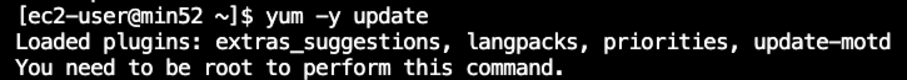
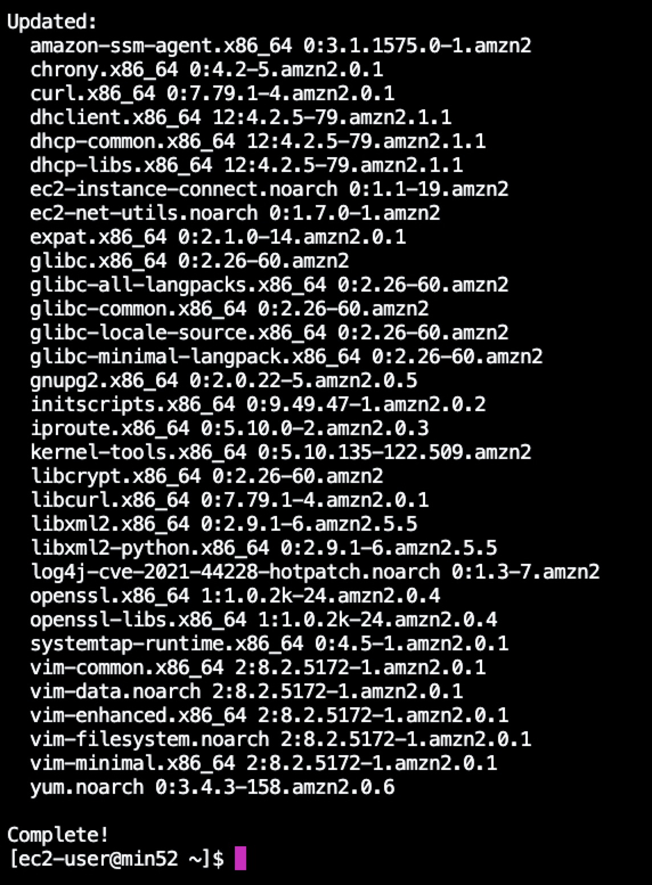
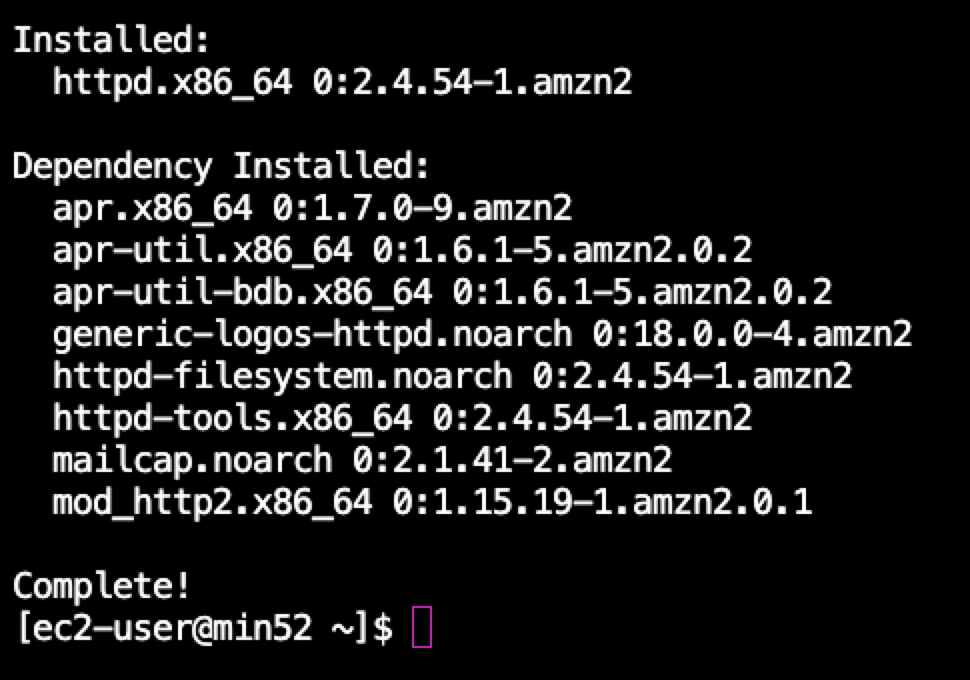
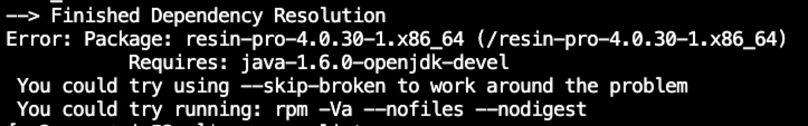
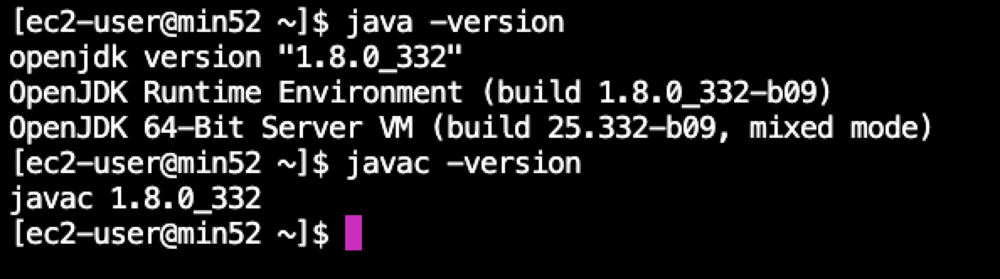
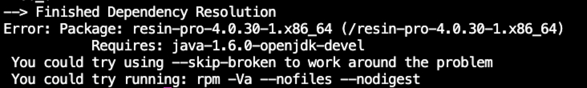
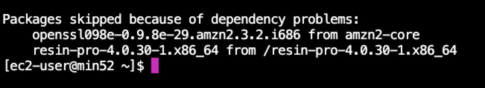
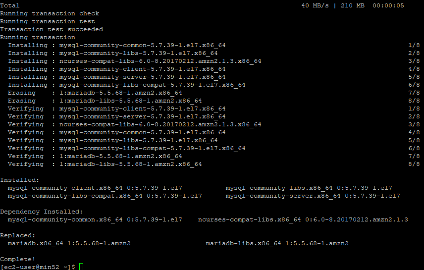
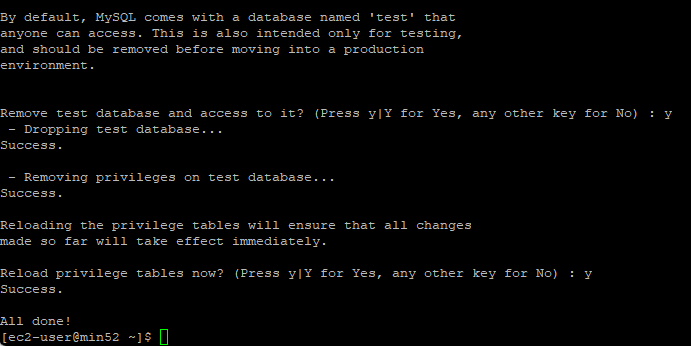
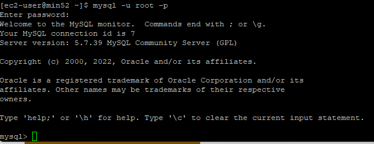

필수프로그램 설치
1. yum 업데이트
yum -y update

해당 명령어를 사용하려면 root로 접근 해야한다는 문구가 나온다.
root 권한으로 명령어를 실행하기 위해서 명령어 앞에 sudo를 붙여준다.
sudo yum -y update

패키지들이 업데이트 되었다.
2. EPEL 설치
EPEL이란 Extra Packages for Enterprise Linux의 약자다.
즉, 기업용 리눅스를 위한 추가 패키지이다.
CentOs나 RHEL에서 제공되지 않는 패키지를 설치하기 위한 추가 패키지 저장소이다.
sudo amazon-linux-extras install epel -y
위 명령어로 epel 패키지를 설치한다.
EPEL 설치가 완료되었다.
3. Apache 설치
sudo yum install httpd
위 명령어를 이용해서 Apache2.4.54 버전을 설치 했다.

4. JDK 설치

JDK 설치에 앞서서 Resin 4.
sudo yum -y install java-1.8.0-openjdk.x86_64
sudo yum -y install java-1.8.0-openjdk-devel.x86_64
JDK 1.8 버전을 설치해준다.

자바와 자바 컴파일러가 정상적으로 설치되었다.
5. Resin
sudo rpm --import http://caucho.com/download/rpm/RPM-GPG-KEY-caucho
sudo yum install http://caucho.com/download/rpm/4.0.30/x86_64/resin-pro-4.0.30-1.x86_64.rpm
JDK1.8을 설치하고도 여전히 의존성 문제가 나온다.

—skip-broken 옵션으로 설치를 진행해보았다.

resin이 skipped되었다는데 설치가 정상적으로 이루어진거 같지 않다.
추후 확인이 필요하다
6. MYSQL5.7 설치
sudo yum localinstall -y https://dev.mysql.com/get/mysql57-community-release-el7-11.noarch.rpm
[ec2-user@min52 ~]$ sudo yum install mysql-community-server

mysql이 설치가 완료되었다.
이제 아래 명령어를 통해서 활성화하고 시작한다.
sudo systemctl enable mysqld
sudo systemctl start mysqld
mysql 서버를 시작하고 자동 생성된 비밀번호를 아래 명령어로 찾는다
sudo grep 'temporary password' /var/log/mysqld.log
mysql 서버에 보안을 적용한다
sudo mysql_secure_installation

처음에 루트 비밀번호를 입력하고 새로운 비밀번호를 설정해준다.
그리고 나오는 모든 옵션에 y를 해주고 설치를 완료한다.
mysql 서버에 루트로 접속해본다
mysql -u root -p

정상적으로 접속이 된다.
7. PHP 5.4 설치
sudo yum -y install php.x86_64